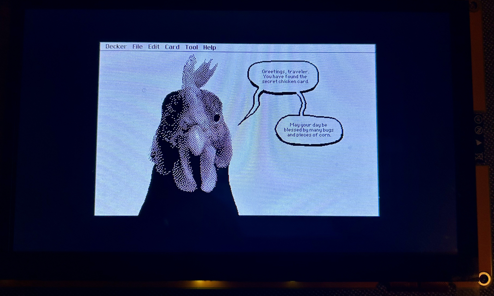

Single Purpose Devices: Warum ich Decker auf einen 30€-Bildschirm portiere
August 6, 2026

Die taz hat kürzlich über den Cyberdeck-Trend berichtet: junge Frauen bauen
sich kleine, Selbstbau-Computer – pink, niedlich, oft in
Muschel- oder Polly-Pocket-Gehäusen – und stellen sie auf TikTok und
Instagram vor.1 Katrin aus Stuttgart (auf Instagram miss.molerat)
baut solche Geräte seit zehn Jahren; der Philosoph Andrew Hutcheon hat
das Phänomen akademisch untersucht. Was die Community eint, ist mehr
als Ästhetik: Antikapitalismus, Cyberfeminismus als Gegenentwurf zur
männlich-militärischen Optik klassischer Cyberdecks, Datenschutz durch
eigene, unabhängige Werkzeuge statt Konzern-Überwachung, und
Nachhaltigkeit durch Wiederverwendung statt Neukauf. Ein Post-Titel
bringt es auf den Punkt: "My Girlypop Hardware Hacking Anti-Facist
Cyberdeck."
Mein Projekt - Decker (ein HyperCard-artiges Autorenwerkzeug, erfunden von John Earnest) auf ein Sunton ESP32-8048S070C-Board zu portieren, ein 7"-Touch-Display mit eingebautem ESP32-S3 für rund 30-40 Euro - ist kein Cyberdeck im engeren Sinn. Ein Cyberdeck ist meist ein vollwertiger, allzweck-fähiger Linux-Rechner in einem individuellen Gehäuse. Mein Gerät ist das Gegenteil: absichtlich auf eine einzige Sache beschränkt. Es kann keine E-Mails abrufen, keine Apps nachladen, keine Benachrichtigungen schicken. Es kann eine Sache: HyperCard-artige interaktive Karten-Stapel bauen und benutzen, mit Stift, Text, Buttons, kleinen Skripten - auf einem Gerät, das nichts anderes tut und daher auch nichts anderes ablenkt oder überwacht.
Was "Single Purpose" von "General Purpose" unterscheidet
Ein Smartphone ist das ultimative General-Purpose-Gerät: Kamera, Kommunikationszentrale, Zahlungsmittel, Unterhaltungsmaschine, Arbeitsgerät, alles in einem - und alles miteinander verwoben, alles mit denselben Konten, denselben Trackern, denselben Benachrichtigungen verbunden. Das ist enorm praktisch. Es ist aber auch der Grund, warum es so schwer ist, sich beim Schreiben, Zeichnen oder Nachdenken nicht ablenken zu lassen - die Ablenkung ist im selben Gerät eingebaut wie das Werkzeug.
Ein Single-Purpose-Gerät verzichtet bewusst auf diese Verwobenheit. Es ist unpraktisch für fast alles - und genau dadurch gut für die eine Sache, für die es gebaut wurde. Die Cyberdeck-Szene und die Typewriter-Bewegung (mechanische wie digitale) teilen dieses Prinzip, auch wenn die politischen Untertöne unterschiedlich gewichtet sind. Hier ist es weniger explizit politisch als bei Katrins "Anti-Facist Cyberdeck", aber die Grundhaltung überschneidet sich: ein Werkzeug besitzen und verstehen, das man selbst gebaut, portiert und gepatcht hat, statt eines, das man nur benutzt.
Ein Gefäß, keine Waffe
Ursula K. Le Guin hat in ihrem Essay The Carrier Bag Theory of Fiction (1986)2 eine Idee der Anthropologin Elizabeth Fisher aufgegriffen: Das erste menschliche Werkzeug war wahrscheinlich nicht der Speer, sondern das Gefäß - ein Beutel, ein Netz, eine Schlinge, um gesammelte Wurzeln, Nüsse und Beeren nach Hause zu tragen. Erst danach, lange danach, kam die Waffe. Le Guin wendet das gegen die übliche Erzählung von Technik und Geschichte überhaupt: die "Killer Story", in der ein Held mit einer Waffe linear auf ein Ziel zustürmt, ist nicht die einzige mögliche Form. Eine Tragetasche erzählt anders - sie sammelt Verschiedenes ein und hält es in Beziehung zueinander, ohne dass eines davon die Heldenrolle übernehmen müsste.
Mein Decker-Gerät ist, in diesem Sinn, eher Tragetasche als Waffe. Es kann niemanden erobern: keine Aufmerksamkeit erzwingen, keine Benachrichtigung schicken, keinen Task "erledigen" im Sinne einer To-do-Liste, die man abarbeitet wie ein Beutespeer die Jagd. Es kann nur sammeln und halten - Text, eine Zeichnung, einen Button, ein paar Zeilen Skript - und das alles in Beziehung zueinander auf einer Karte, auf einem Stapel von Karten. "Deck", der Name, den Decker seinen Dokumenten gibt, ist wörtlich schon eine Tragetasche: ein Stapel, den man zusammenstellt, umsortiert, weiterreicht. Gerade weil das Gerät so wenig kann - keine Kamera, kein Messenger, kein endloser Feed -, bleibt es bei dieser einen Funktion: ein Gefäß für digitale Rohstoffe zu sein, die man selbst sammelt und ordnet, statt ein Werkzeug, das einem sagt, was als Nächstes zu erledigen ist. Die Beschränkung ist nicht der Mangel, sondern die Form - wie bei der Tragetasche selbst.
Was das in der Praxis bedeutet
Der Sunton-Board hat 8 MB PSRAM - winzig gegen jeden Laptop, aber genug für ein fokussiertes Werkzeug, wenn man sorgfältig damit umgeht. Ein Großteil der Portierungsarbeit besteht genau darin: herausfinden, wo der ursprünglich für Desktop-Rechner geschriebene Decker-Code Speicher verschwendet, der auf so einem kleinen Gerät fehlt - Kartenhintergründe erst dann anlegen, wenn sie wirklich gebraucht werden, sie wieder freigeben, wenn sie leer bleiben, jeden Bildschirm-Neuaufbau hinterfragen, der nicht nötig ist. Kein Cloud-Backend, keine Telemetrie, kein App Store - nur ein Gerät, ein Zweck, und der Code, der zwischen beiden vermittelt, so knapp wie möglich gehalten.
Das ist am Ende dieselbe Haltung, die die taz bei den Cyberdeck-Bastlerinnen beschreibt, nur mit einem anderen Ergebnis: nicht ein Gerät, das alles kann, personalisiert in einem Muschelgehäuse - sondern eines, das bewusst wenig kann, dafür aber genau das, wofür man es gebaut hat. Eine Tragetasche, kein Speer.
Die Quellen meines Projektes liegen auf Github. Bis zu einem ersten Release ist noch einiges an Debugging und Optimierungen nötig.
—
Comments
Reply on Mastodon